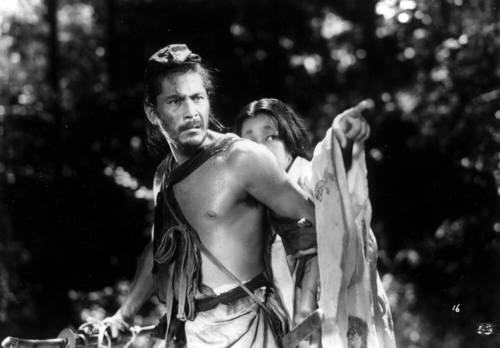

Rashomon, Press Photograph (Toshiro Mifune and Machiko Kyō)
Akira Kurosawa · 1950 · Press photograph, black and white
In copyright. Look and learn: shown for study, not for download.
In the forest, where electric lights could not be used, the cinematographer Kazuo Miyagawa reflected sunlight with eight mirrors. A baseball net was stretched several metres overhead and laid with leaves and branches, moved with a long bamboo pole so their shadows fell across the actors' faces. The film had only three sets. Shooting ran from 7 July to 17 August 1950, and after a week of post-production it opened in Tokyo on 25 August.